We use a genetic algorithm to generate challenging environments for a multi-agent foraging simulation. We consider a foraging environment challenging if agents collect less food on it.
We're interested in generating challenging environments because it provides a way to probe the weaknesses of an algorithm, especially if the algorithm is hard to understand due to multiagent interactions or because deep learning is involved in the training. The challenging environments produced can be used to compare strengths and weaknesses of different algorithms, as well as to improve the algorithms.
Project paper and code.
Explore some of our results below!
Ants (purple) spawn from a hive in the upper left corner (yellow). Ants can collect food by walking to a food cell (green) and then returning to the hive. Ants can't walk through obstacles (blue). Ants lay pheromone (gray), and depending on the swarm algorithm, the pheromone can help lead other ants to food.
To measure the difficulty of an environment, we used the amount of food collected per agent (FPA), where a lower magnitude FPA corresponds to a harder environment.
We "evolve" a population of environments to get harder using a genetic algorithm (GA). Every generation, the difficulty of each environment is tested by simulating the foraging algorithm on it. The set of hardest environments from the last generation (which we call the "elite pool") are copied over into the new generation. We use mutation and crossover techniques on other members of the last generation to produce the rest of the new generation.
We constrain environments to have a fixed amount of food and a limited number of obstacles. Also, only environments where all food blocks are reachable from the hive are allowed.
Below are simulation examples of our algorithms on environments of varying difficulty. (Note that these are just illustrative examples for seeing how the algorithms work. They are not necessarily representative of overall GA results.)
Takes random steps. Because movements are random, these ants do not get trapped like the ants from the other algorithms.
|
Easy: 4.8 FPA (Generation 0 Elite Pool) |
Medium: 3.4 FPA (Generation 25 Elite Pool) |
Hard: 1.8 FPA (Generation 49 Elite Pool) |
| 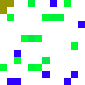 | 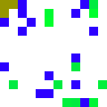 | 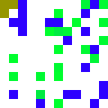 |
Follows a more traditional swarm foraging algorithm based on how ants lay pheromone to lead each other to food sources. Once an ant finds food, it knows the optimal way back to the hive.
These ants prefer to follow areas with high pheromone within their limited observation boxes. If possible, they try to move towards a forward direction to avoid following their own pheromone back to the hive, but this behavior can lead to the agent getting trapped, which the GA finds a way to exploit.
|
Easy: 4.2 FPA (Generation 0 Elite Pool) |
Medium: 1.4 FPA (Generation 15 Elite Pool) |
Hard: 0 FPA (Generation 20 Elite Pool) |
| 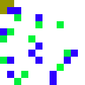 | 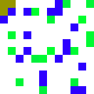 | 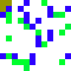 |
Trained with a deep Q-learning reinforcement learning algorithm (DQN) on randomly generated grids. During training, the agent is rewarded for observing food, collecting food, and taking food back to the hive. Once an ant finds food, it knows the optimal way back to the hive.
|
Easy: 5.8 FPA (Generation 0 Elite Pool) |
Medium: 0.6 FPA (Generation 5 Elite Pool) |
Hard: 0.0 FPA (Generation 5 Elite Pool) |
| 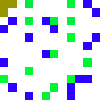 | 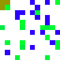 | 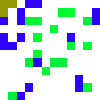 |
The DQN from above after being co-evolved with the genetic algorithm. Below, the co-evolved DQNAgent is run on the same grids as above.
Some grids, namely the SwarmAgent trap structure, do still stump the co-evolved DQNAgent. We can also see that the co-evolved DQNAgent still has a tendency to get stuck.
|
Easy: 4.4 FPA |
Medium: 2.6 FPA |
Hard: 4.4 FPA |
| RandomAgent | SwarmAgent | DQNAgent |
| 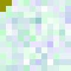 | 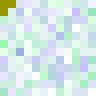 | 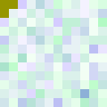 |